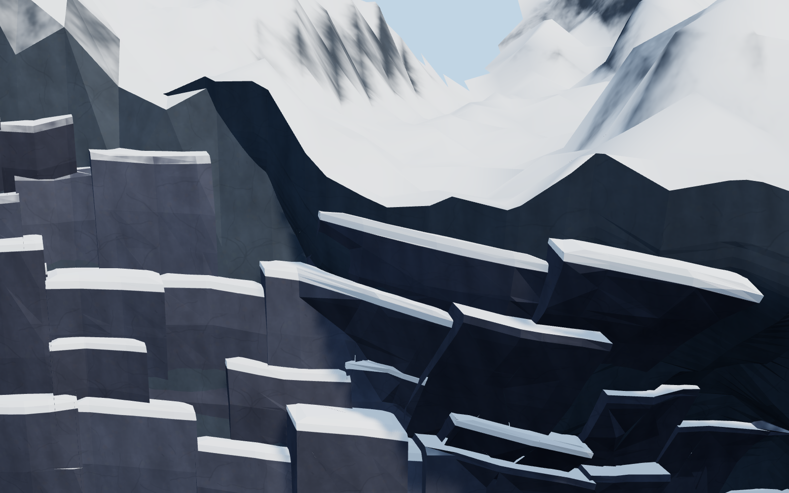
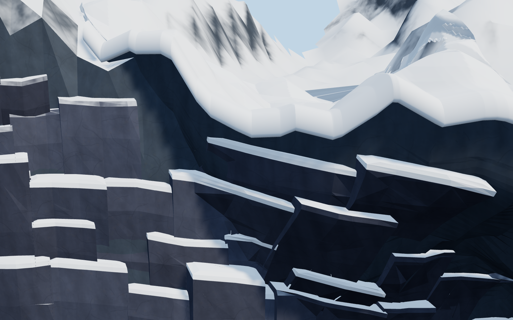
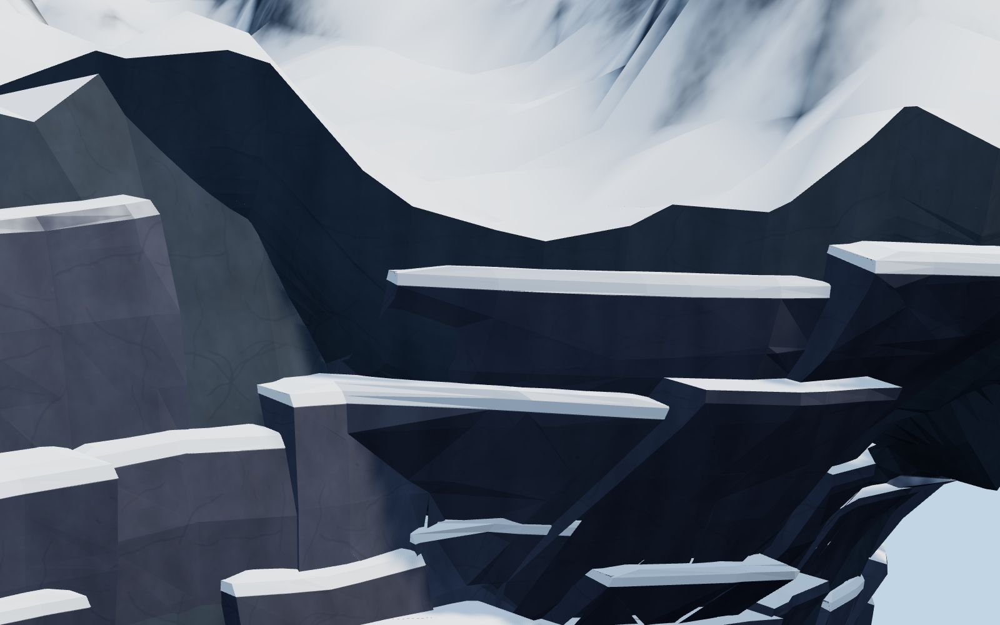
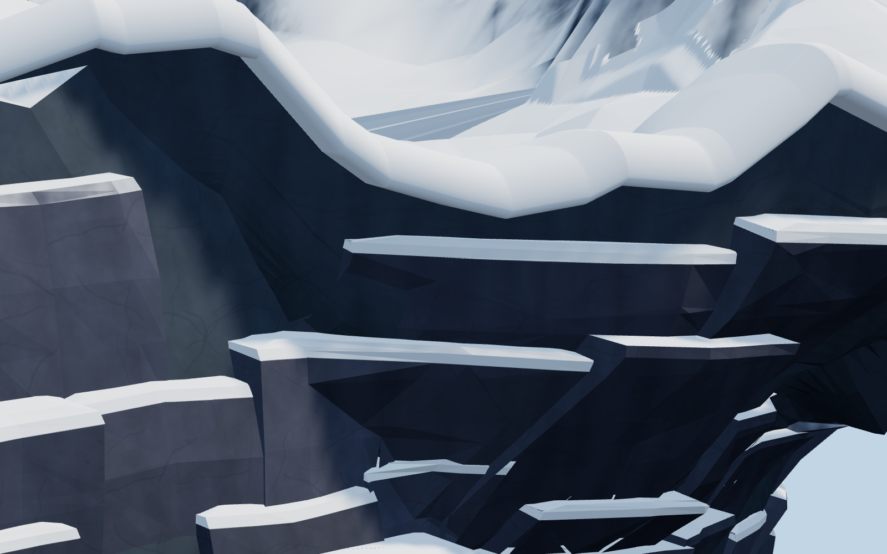
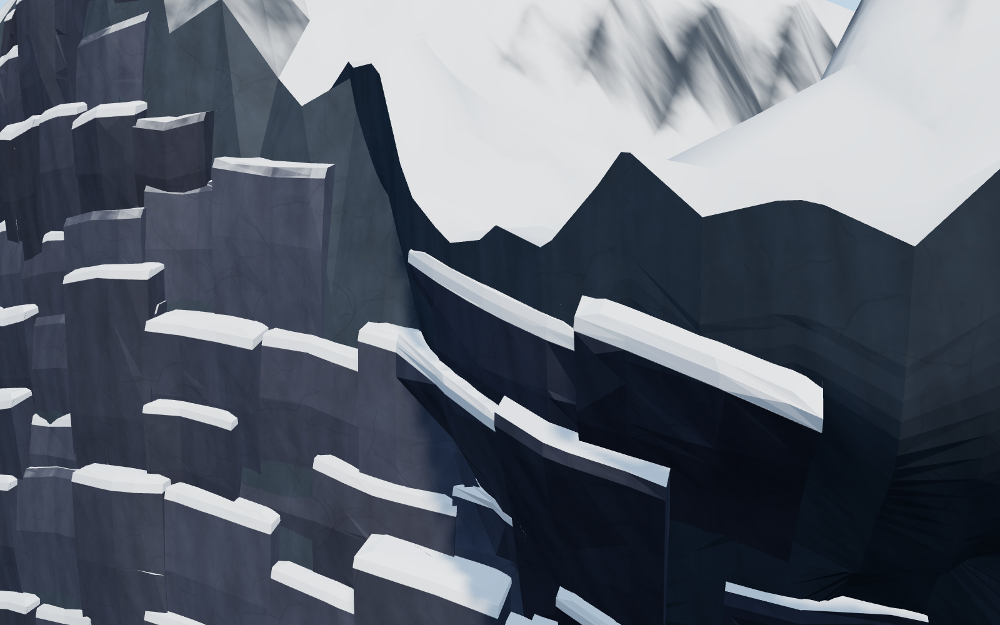
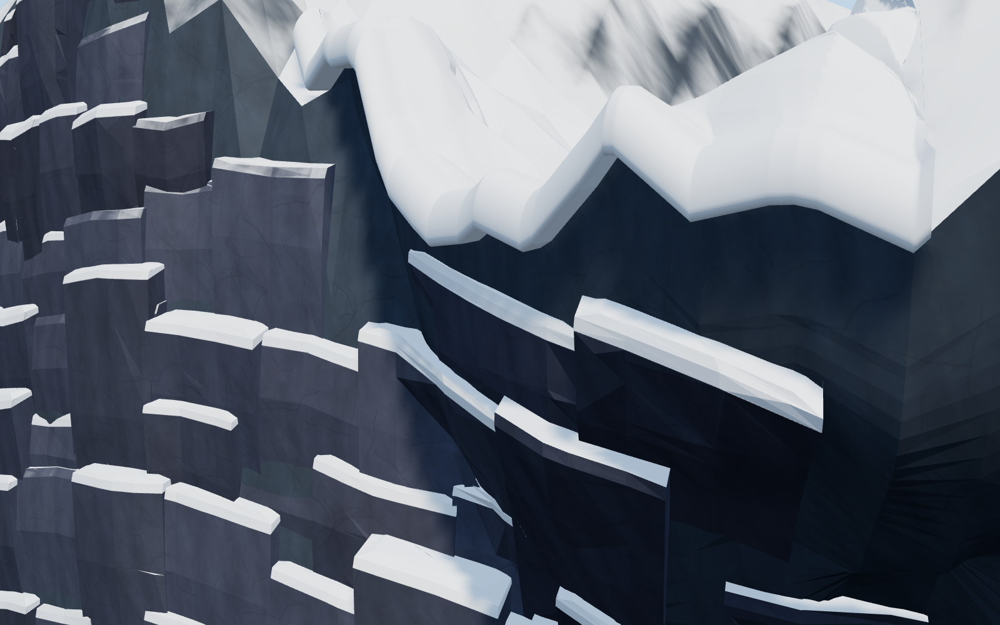

Снег F · плавный возврат у прохода
Слева и справа одинаковые камень, подушки, камеры, свет 2,30 и нормали F. Дефекты сохранены.
У прохода · one · без нового снега

У прохода · one · со снегом F

У прохода · two · без нового снега

У прохода · two · со снегом F

У прохода · three · без нового снега

У прохода · three · со снегом F
